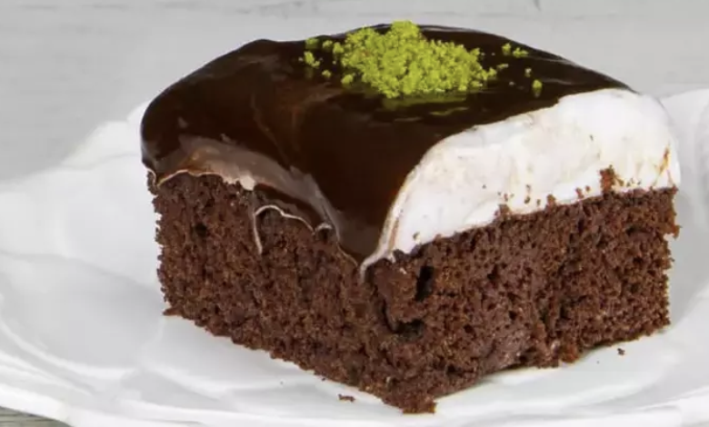
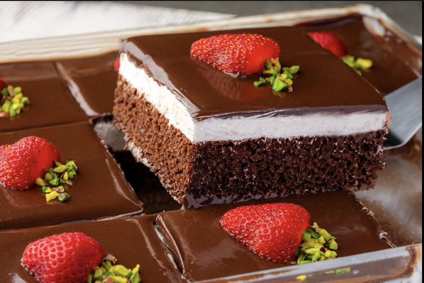

AĞLAYAN PASTA TARİFİ



Ağlayan Pasta Tarifi İçin Malzemeler
keki için:
- 4 adet yumurta
- 1 su bardağı toz şeker
- 3 yemek kaşığı kakao
- 4 yemek kaşığı süt
- 1 paket vanilya
- 1 paket kabartma tozu
- 1 su bardağı un
keki ıslatmak için:
- 1,5 su bardağı süt (300 ml)
üzeri için:
- 2 paket krem şanti
- 2 çay bardağı süt (250 ml – krem şanti için)
- 1 paket hazır çikolata sos
- 2,5 su bardağı süt (500 ml – çikolata sos için)
yapılışı:
- Öncelikle uygun bir karıştırma kabına yumurta ve toz şekeri alalım. Köpük köpük oluncaya kadar mikser yardımıyla çırpalım.
- Ardından süt, kakao, kabartma tozu, vanilya ve unu karıştırma kabının içerisine ekleyelim.
- Tüm malzemeleri güzelce karışıncaya kadar mikserle tekrardan çırpalım. Kek hamurumuz hazır.
- Şimdi dikdörtgen borcama alarak tabanını ve kenarlarını bir fırça yardımıyla güzelce yağlayalım.
- Daha sonra kek hamurunu borcamın her yerine eşit bir şekilde yayılmasına dikkat ederek boşaltalım.
- Kekimizi önceden 160 derece ısıttığımız fırında, fansız ayarda 30 dakika boyunca pişirelim.
- Sürenin sonunda keki fırından alalım ve sıcağıyla üzerine oda sıcaklığındaki sütü her yerine gelecek şekilde gezdirelim.
- Kek sütü hızlıca çekecektir. Bir kenarda soğuması için bekletelim.
- Diğer taraftan ağlayan pastanın çikolatalı sosu için 1 paket hazır çikolata sosu ve 2,5 su bardağı sütü tencereye alalım.
- Tel çırpıcıyla karıştırarak koyulaşıncaya kadar sosumuzu pişirelim.
- Çikolata sosu kaynayıp koyulaştıktan sonra ocağı kapatalım ve soğuması için bir kenarda bekletelim.
- Pastanın krem şantisi için uygun bir karıştırma kabına krem şanti ve soğuk sütü alalım.
- Mikserle krem şanti katılaşıncaya kadar çırpalım.
- Kekimiz iyice soğuduktan sonra hazırladığımız krem şantiyi kekin üzerine alalım. Bir spatula veya pasta sıvama aparatı ile her yerine iyice yayalım.
- Krem şanti sürmeden önce kekin güzelce soğuduğundan mutlaka emin olalım. Aksi halde krem şanti eriyerek dağılabilir.
- Krem şantiyi güzelce sürdükten sonra tamamen soğuyan çikolata sosunu krem şantinin üzerine boşaltalım.
- Pastamız hazır olduktan sonra en az 2 saat boyunca buzdolabında dinlenmeye bırakalım.
- Dolaptan aldıktan sonra dilediğiniz büyüklükte dilimleyerek servis edebilirsiniz. Afiyet olsun!